Настройка swap в Ubuntu
Инструкции Обновлено: 9 сентября, 2020 39 admin
Оперативная память имеет очень важное значение для нормальной работы сервера. В ней размещаются все программы и их данные, когда память переполняется, программы могут выдавать различные ошибки или даже прекращать работу. Время отклика системы увеличивается настолько, что работать с ней становиться невозможным.
Самый простой способ увеличить количество оперативной памяти и защитить систему от переполнение памяти, это добавить раздел swap ubuntu. В этой статье будет рассмотрено как выполняется настройка swap Ubuntu. Мы рассмотрим вариант с добавлением раздела подкачки для обычных компьютеров, а также файла подкачки для серверов.
Хотя использование раздела подкачки на жестком диске HDD это привычное явление, применение такого метода для SSD может вызвать проблемы. SSD имеет ограниченное количество перезаписей одного сектора, а область swap постоянно перезаписывается, это очень сильно снизит срок службы вашего диска. Поэтому использование swap пространства на SSD строго не рекомендуется.
Swap - это пространство подкачки это область на жестком диске, которая используется для временного хранения данных из оперативной памяти, для которых там больше нет места. Это позволяет увеличить объем информации, которую система может хранить в рабочей памяти. Пространство подкачки используется только тогда, когда память уже полностью занята, и туда будут помещаться только данные, которые давно использовались.
Работа с информацией будет выполняться намного медленнее, чем в оперативной памяти, но операционная система будет продолжать работать и использовать swap только для старых данных. В целом, это может быть отличной защитой от переполнения оперативной памяти. Пространство подкачки можно настроить двумя способами, добавив раздел подкачки ubuntu на диске или создать файл подкачки.
Перед тем как перейти к настройке давайте посмотрим не подключены ли другие разделы подкачки к системе. Для этого выполните:
sudo swapon --show
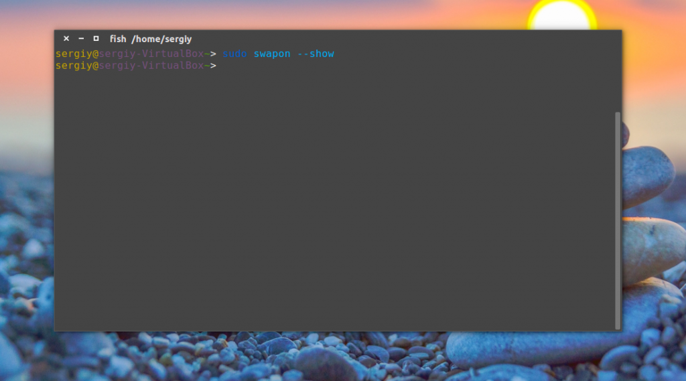
Если ничего не будет выведено, значит в вашей системе swap ubuntu не настроен. Вы также можете убедиться, что нет активного swap с помощью утилиты free:
free -h
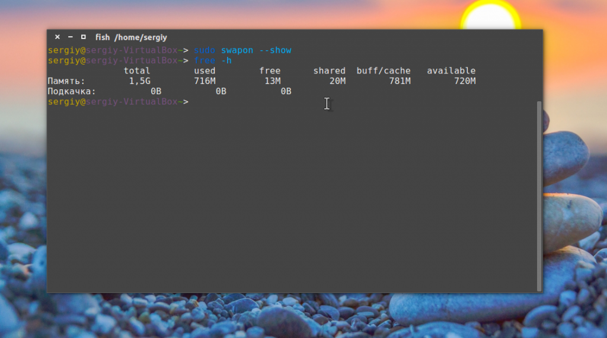
Строка Swap пуста, значит раздела swap пока еще не подключен.
Настройка файла подкачки в Ubuntu 16.04
На серверах часто используется файл подкачки, такой способ применяется потому что не всегда есть возможность менять разметку диска.
Теперь убедитесь, что на диске есть достаточно свободного места. Самый простой способ узнать свободное место в терминале - это утилита df:
df -h
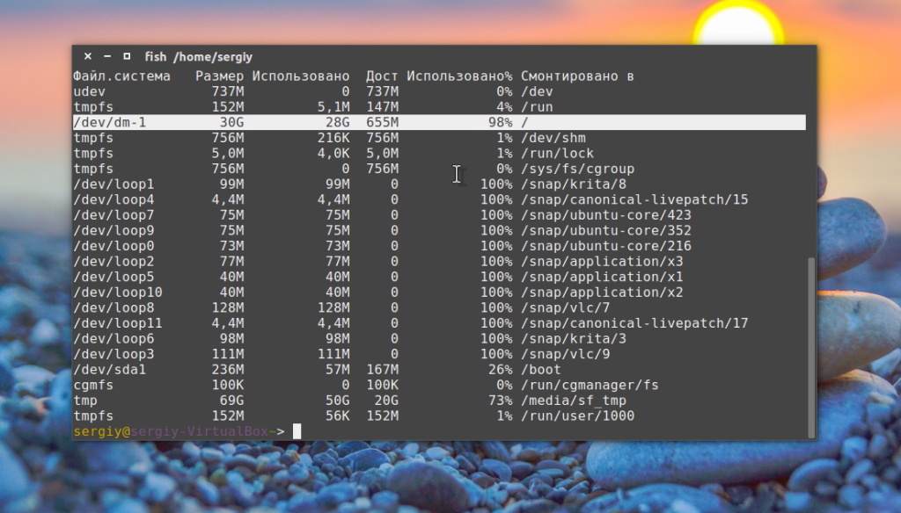
В нашем случае есть достаточно места для размещения пространства подкачки. Размер swap Ubuntu 16.04 зависит от ваших потребностей. Обычно рекомендуют использовать объем в два раза больше чем реальный размер оперативной памяти. Но больше 4 Гб использовать не нужно. Если вы планируете использовать гибернацию на персональном компьютере, то нужно использовать объем, равный объему ОЗУ.
Создание файла подкачки в Ubuntu 16.04
Самый быстрый способ создать swap файл ubuntu такой файл, это использовать утилиту fallocate, она создает файл нужного размера мгновенно. Поскольку у нас 1 Гб оперативной памяти, добавим раздел подкачки ubuntu на 2 Гб. Для этого выполните:
sudo fallocate -l 1G /swapfile
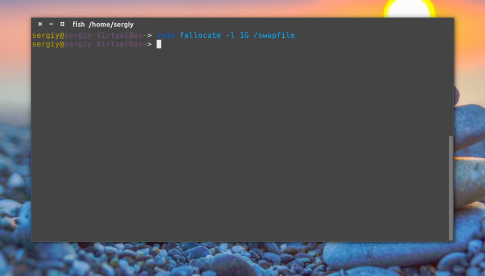
Посмотрите, действительно ли зарезервировано нужное количество памяти:
ls -lh /swapfile
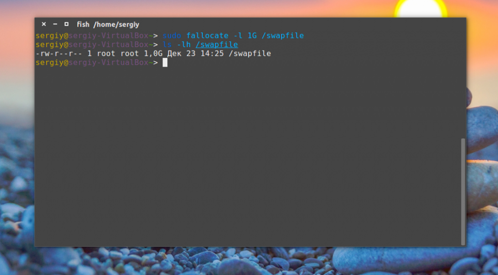
Когда файл готов, нам нужно превратить его в файл swap Ubuntu. Сначала нужно заблокировать доступ к нему всем кроме суперпользователя. Для этого выполните:
sudo chmod 600 /swapfile
Теперь только root может читать и изменить этот файл:
ls -lh /swapfile
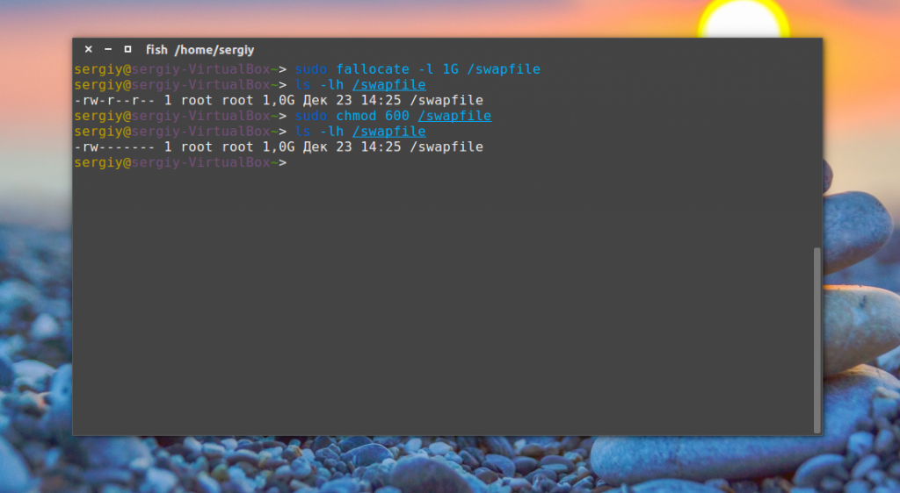
Затем создайте файловую систему swap командой:
sudo mkswap /swapfile
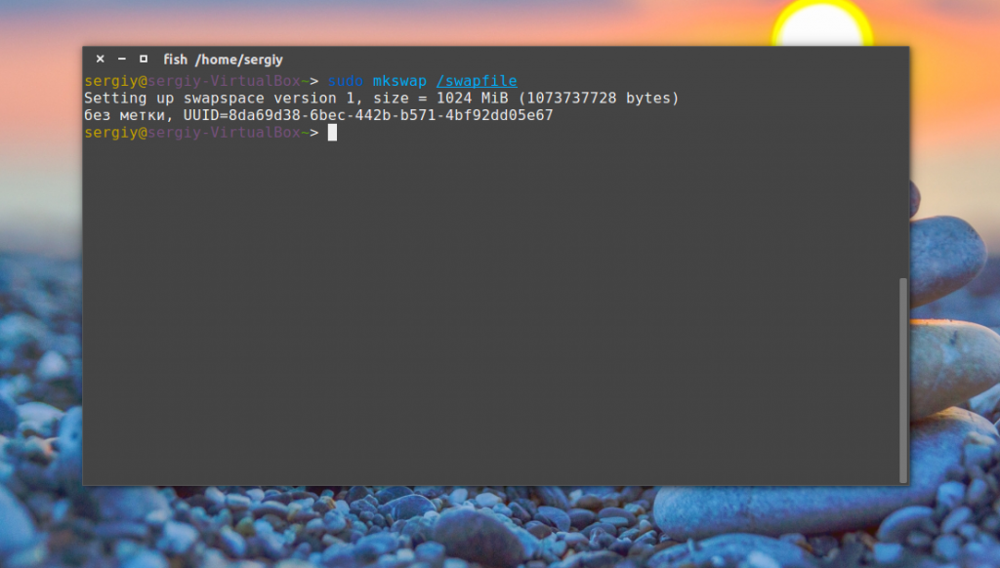
Когда файл будет размещен и промаркирован вы можете включить файл подкачки чтобы начать его использовать:
sudo swapon /swapfile
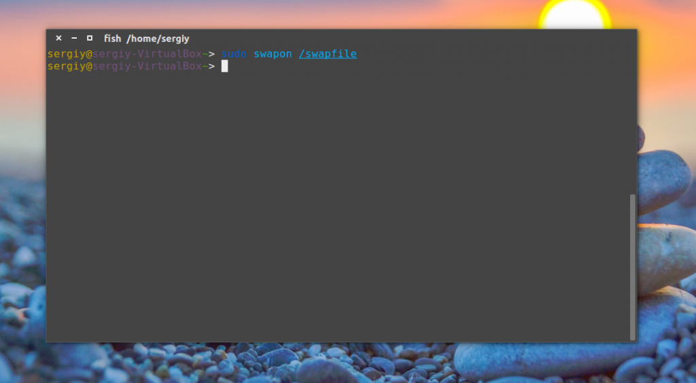
Вы можете убедиться что все работает с помощью команды:
sudo swapon --show
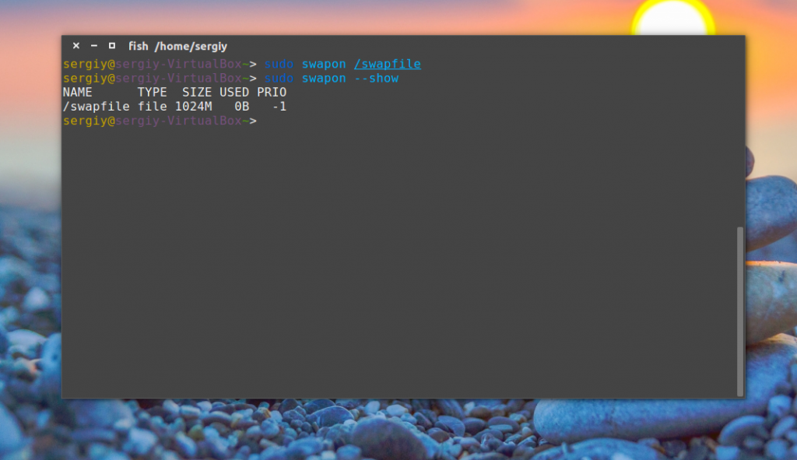
И еще раз смотрим вывод утилиты free:
free -h
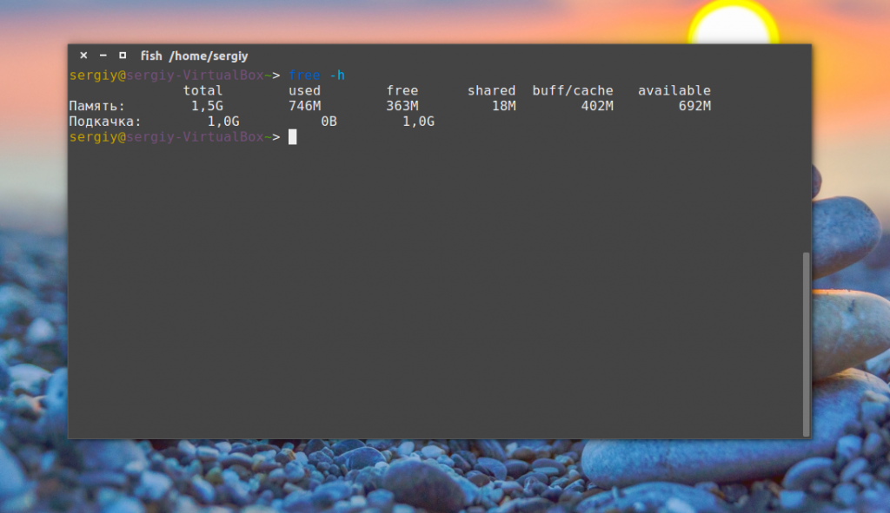
Как видите, файл подкачки был успешно создан и активирован. Теперь памяти намного больше и система не зависнет. Но он будет работать только до перезагрузки.
Как я уже сказал, этот swap ubuntu будет работать только до перезагрузки сервера или компьютера. Чтобы настройка Swap в Ubuntu сохранялась после перезагрузки нужно отредактировать файл /etc/fstab. Вы можете вручную добавить строку в файл, но вы можете использовать такую команду:
echo '/swapfile none swap sw 0 0' | sudo tee -a /etc/fstab
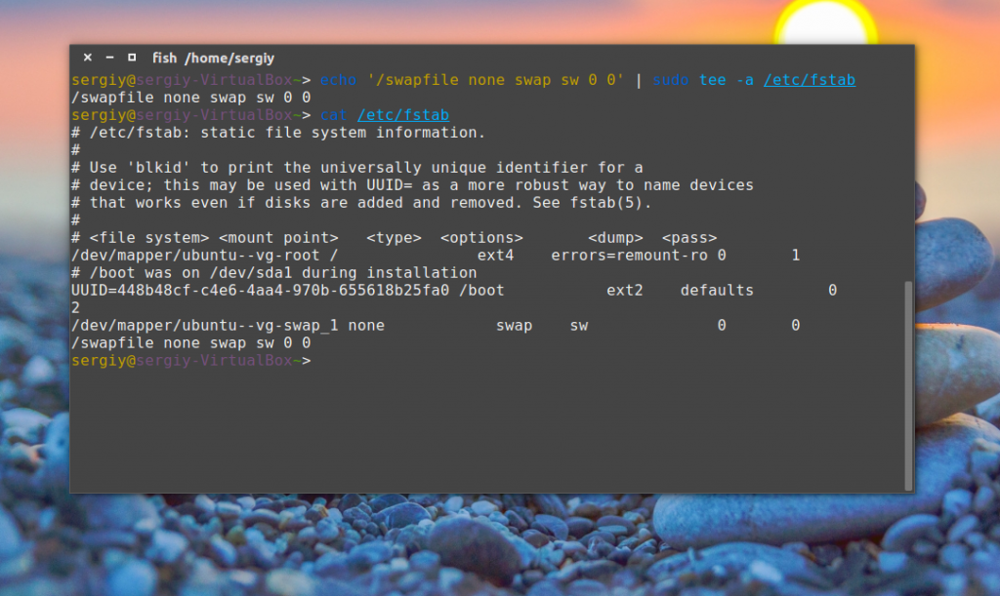
Настройка раздела подкачки в Ubuntu
Я не буду писать много про то, как выполняется настройка swap в Ubuntu в виде раздела. Все действия аналогичны тем, которые применяются для файла, только вместо файла используется раздел. Допустим, мы хотим использовать раздел /dev/sda2. Сначала создать swap Ubuntu из обычного раздела:
sudo mkswap /dev/sda2
Затем активируйте раздел подкачки:
sudo swapon /dev/sda2
И проверьте все ли прошло правильно:
sudo swapon --show
Если да, то в списке подключенных разделов вы увидите нужный. Осталось добавить строку в /etc/fstab для автоматической активации после перезагрузки:
echo '/dev/sda2 none swap sw 0 0' | sudo tee -a /etc/fstab
Вы можете контролировать интенсивность использования пространства подкачки в Ubuntu с помощью параметра ядра swappiness:
cat /proc/sys/vm/swappiness
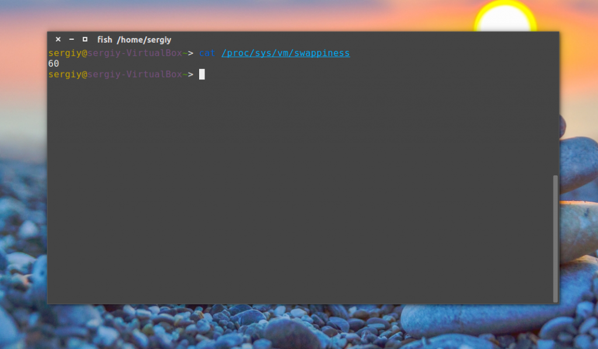
По умолчанию установлено значение 60. Если это значение ближе к 100, система будет пытаться поместить в подкачку больше данных и сберечь память, при значениях близких к нулю, ядро не переносит данные на диск, если в этом нет крайней необходимости. Этот вариант может сделать систему быстрее, особенно актуально для домашних компьютеров.
Чтобы установить значение 10 выполните:
sudo sysctl vm.swappiness=10
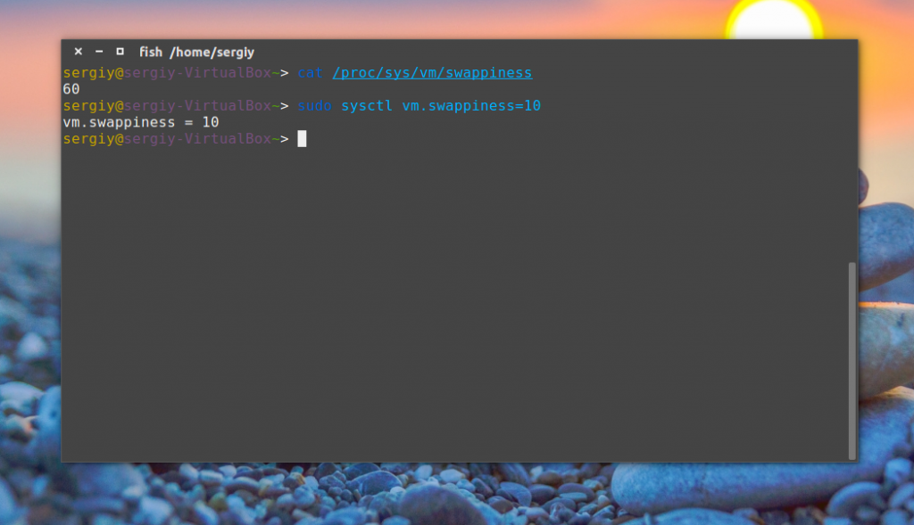
А для сохранения этой настройки после перезагрузки:
sudo sysctl -w vm.swappiness=10
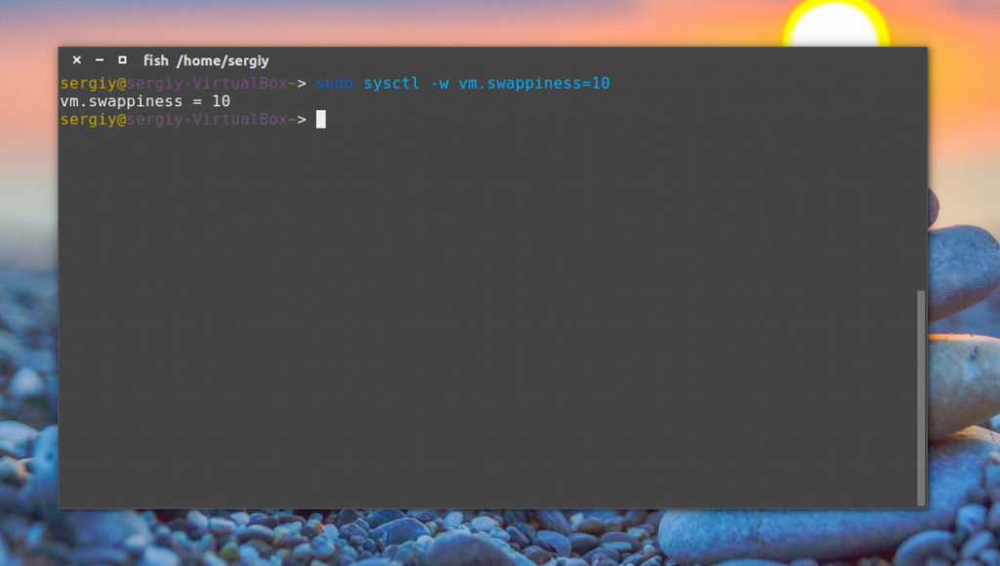
Другой параметр, который влияет на количество используемой памяти - это vfs_cache_pressure. Он указывает системе какое время нужно хранить открытые файлы в кэше оперативной памяти. Значение 100 заставляет систему удалять такие файлы очень быстро, 0 - держать их в памяти как можно дольше. Посмотрите текущее состояние:
cat /proc/sys/vm/vfs_cache_pressure
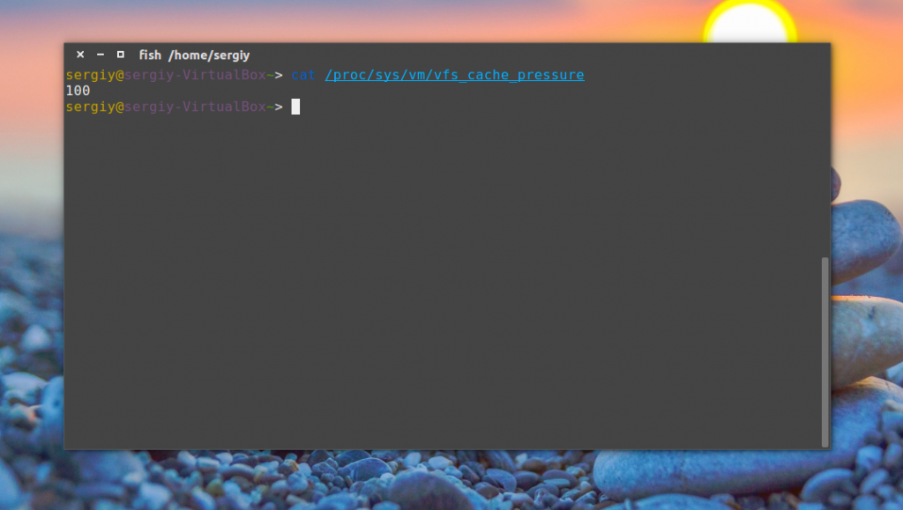
Чтобы хранить файлы дольше, можно установить значение в 50:
sudo sysctl -w vm.vfs_cache_pressure=50
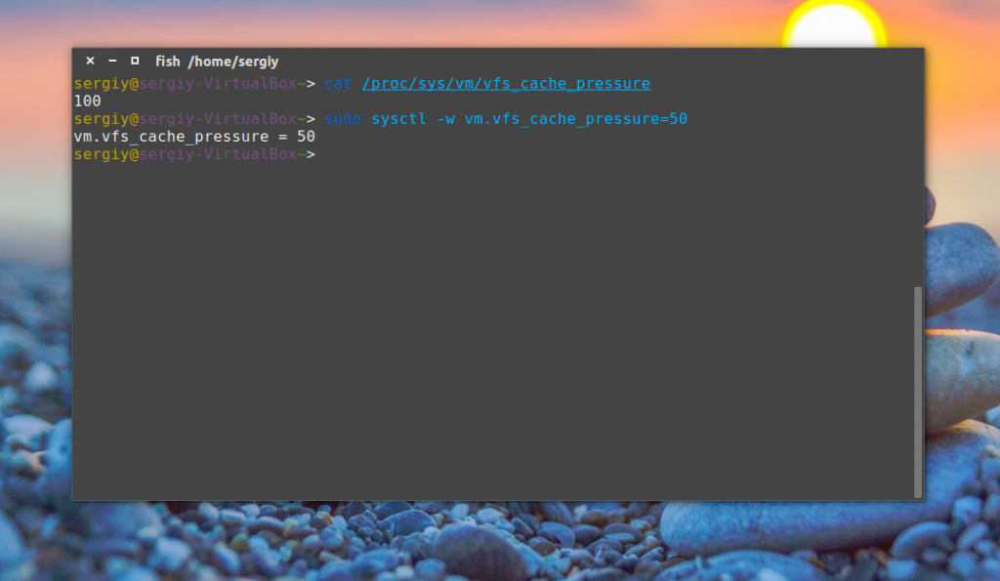
С помощью этой инструкции вы можете на время решить проблему с пространством подкачки если серверу недостаточно памяти, или поможет предотвратить компьютер от зависания. Настройка swap в Ubuntu выполняется очень просто. Если у вас остались вопросы, спрашивайте в комментариях!